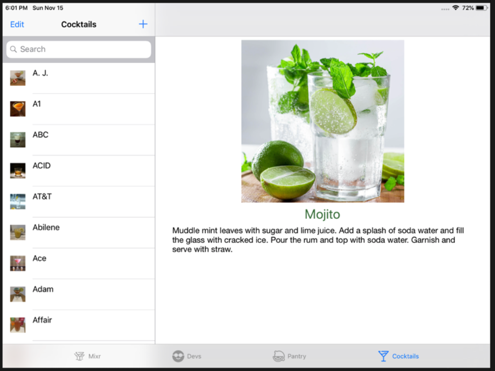
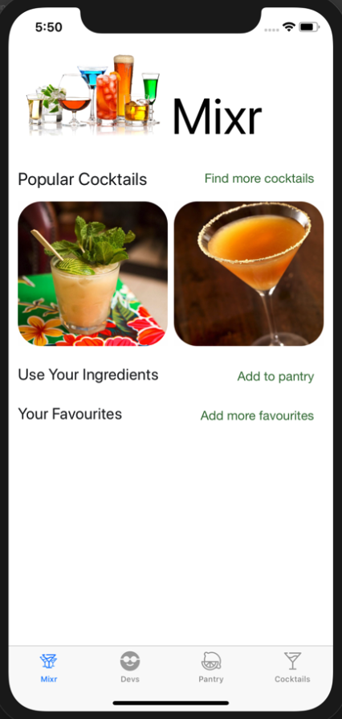
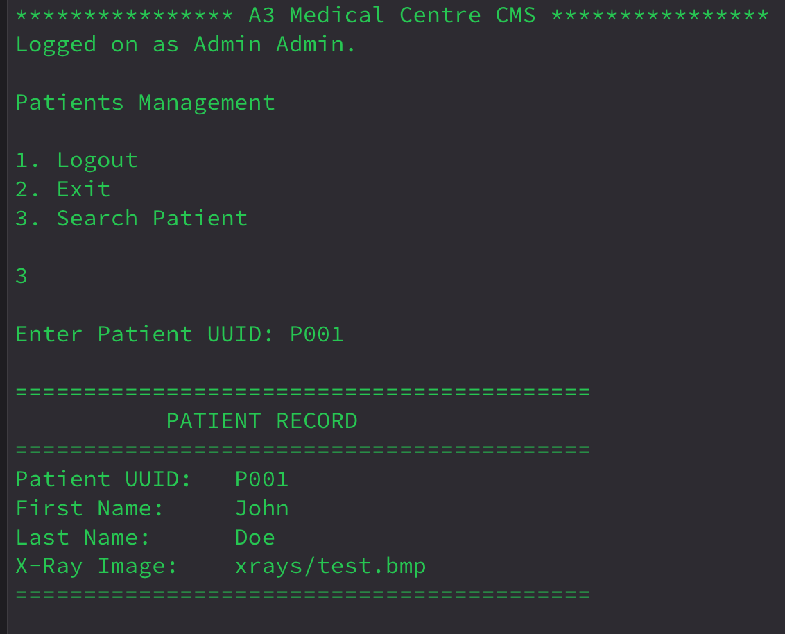

Software Projects
Labyrinth of Logic - Unreal Engine Advanced C++
Developing our own libraries, we built a networked multiplayer game,
combining procedurally generated maps (colleague) and NPC AI GOAP
with pathfinding (Karl). This includes both memory management for
core C++ and Unreal Engine's UHT reflection system's serialisation
and running game garbage collection.
Source code:
https://github.com/karlbirk-uts/AGP-NetMultiplayer-PCG-AI
Loco-Motive, a Detective Whodunit - Unity Engine C#
Develop a quality game with Agile SDLC on Jira, with cross disciplinary
team combining roles in software engineering, game design with narrative,
visual art, musicians, sound effects designers and voice actors. Karl as
developer for core game flow managers, UIPuzzles namespace, and
interaction event systems that reduce unnecessary load on main thread.
WebGL Playable:
https://karlbirk-uts.itch.io/locomotive
Source code:
https://github.com/karlbirk-uts/Locomotive
iOS Mixr - Swift


Guided by software engineering principles and Apple's Human Interface Guidelines,
research and develop an iOS app that uses RESTful API on Core Data MVC.
Karl as Xcode primary dev (Swift on UIKit).
Source code:
https://github.com/karlbirk-uts/ios-mixr
Medical Centre CMS - C

Build an app in C (C89 for microcontrollers), with LinkedLists, databases, bmp compression,
serialisation and encryption.
Karl as primary dev and QA.
Source code:
https://github.com/karlbirk-uts/medical-centre-cms
Animations, Physics, Shaders - C# on Unity
Realtime rendering using Unity graphics. C# physics, materials HLSL, lighting,
postprocessing and 3D animation.
Karl made colourful dream sequence and volcano. Project files currently too large
for
github.
HAM radio frequency matching minigame - C# on Unity
Unity UI Canvas library minigame with custom mouse interactions,
line-renderer maths and animations.
Playable game:
https://karlbirk-uts.itch.io/ham-radio-tuning-minigame
Source code:
https://github.com/karlbirk-uts/Locomotive